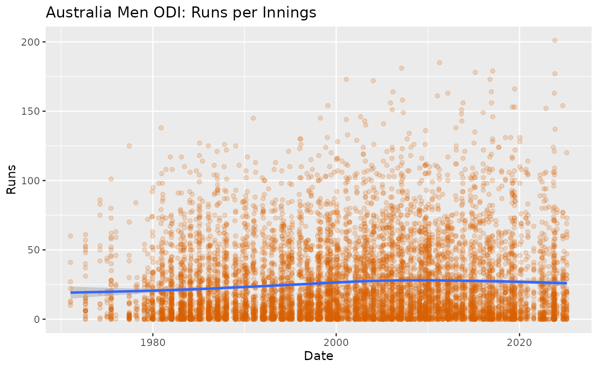
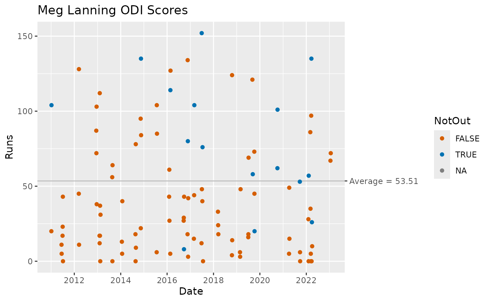

library(cricketdata)
library(tidyverse)
#> ── Attaching packages ─────────────────────────────────────── tidyverse 1.3.1 ──
#> ✔ ggplot2 3.3.5 ✔ purrr 0.3.4
#> ✔ tibble 3.1.6 ✔ dplyr 1.0.8
#> ✔ tidyr 1.2.0 ✔ stringr 1.4.0
#> ✔ readr 2.1.2 ✔ forcats 0.5.1
#> ── Conflicts ────────────────────────────────────────── tidyverse_conflicts() ──
#> ✖ dplyr::filter() masks stats::filter()
#> ✖ dplyr::lag() masks stats::lag()The fetch_cricinfo() function will fetch data on all international cricket matches provided by ESPNCricinfo. Please respect the ESPNCricinfo terms of use when using this function.
Here are some examples of its use.
Women’s T20 bowling data
# Fetch all Women's T20 data
wt20 <- fetch_cricinfo("T20", "Women", "Bowling")| Player | Country | Start | End | Matches | Innings | Overs | Maidens | Runs | Wickets | Average | Economy | StrikeRate | BestBowlingInnings | FourWickets | FiveWickets |
|---|---|---|---|---|---|---|---|---|---|---|---|---|---|---|---|
| A Mohammed | West Indies | 2008 | 2021 | 117 | 113 | 395.3 | 6 | 2206 | 125 | 17.65 | 5.58 | 18.98 | 5/10 | 4 | 3 |
| EA Perry | Australia | 2008 | 2021 | 126 | 119 | 380.5 | 6 | 2237 | 115 | 19.45 | 5.87 | 19.87 | 4/12 | 4 | 0 |
| S Ismail | South Africa | 2007 | 2021 | 98 | 97 | 343.5 | 14 | 1990 | 110 | 18.09 | 5.79 | 18.75 | 5/12 | 0 | 2 |
| Nida Dar | Pakistan | 2010 | 2021 | 108 | 103 | 347.2 | 8 | 1871 | 103 | 18.17 | 5.39 | 20.23 | 5/21 | 1 | 1 |
| A Shrubsole | England | 2008 | 2020 | 79 | 79 | 266.2 | 10 | 1587 | 102 | 15.56 | 5.96 | 15.67 | 5/11 | 2 | 1 |
| KH Brunt | England | 2005 | 2022 | 96 | 95 | 340.5 | 15 | 1888 | 98 | 19.27 | 5.54 | 20.87 | 3/6 | 0 | 0 |
wt20 %>%
filter(Wickets > 20, !is.na(Country)) %>%
ggplot(aes(y = StrikeRate, x = Country)) +
geom_boxplot() +
geom_point(alpha = 0.3, col = "blue") +
ggtitle("Women T20: Strike Rates") +
ylab("Balls per wicket") +
coord_flip()
Australian men’s ODI data by innings
# Fetch all Australian Men's ODI data by innings
menODI <- fetch_cricinfo("ODI", "Men", "Batting", type = "innings", country = "Australia")| Date | Player | Runs | NotOut | Minutes | BallsFaced | Fours | Sixes | StrikeRate | Innings | Participation | Opposition | Ground |
|---|---|---|---|---|---|---|---|---|---|---|---|---|
| 2011-04-11 | SR Watson | 185 | TRUE | 113 | 96 | 15 | 15 | 192.7083 | 2 | B | Bangladesh | Mirpur |
| 2007-02-20 | ML Hayden | 181 | TRUE | 227 | 166 | 11 | 10 | 109.0361 | 1 | B | New Zealand | Hamilton |
| 2017-01-26 | DA Warner | 179 | FALSE | 186 | 128 | 19 | 5 | 139.8438 | 1 | B | Pakistan | Adelaide |
| 2015-03-04 | DA Warner | 178 | FALSE | 164 | 133 | 19 | 5 | 133.8346 | 1 | B | Afghanistan | Perth |
| 2001-02-09 | ME Waugh | 173 | FALSE | 199 | 148 | 16 | 3 | 116.8919 | 1 | B | West Indies | Melbourne |
| 2016-10-12 | DA Warner | 173 | FALSE | 218 | 136 | 24 | 0 | 127.2059 | 2 | B | South Africa | Cape Town |
menODI %>%
ggplot(aes(y = Runs, x = Date)) +
geom_point(alpha = 0.2, col = "#D55E00") +
geom_smooth() +
ggtitle("Australia Men ODI: Runs per Innings")
Indian test fielding data
Indfielding <- fetch_cricinfo("Test", "Men", "Fielding", country = "India")| Player | Start | End | Matches | Innings | Dismissals | Caught | CaughtFielder | CaughtBehind | Stumped | MaxDismissalsInnings |
|---|---|---|---|---|---|---|---|---|---|---|
| MS Dhoni | 2005 | 2014 | 90 | 166 | 294 | 256 | 0 | 256 | 38 | 6 |
| R Dravid | 1996 | 2012 | 163 | 299 | 209 | 209 | 209 | 0 | 0 | 3 |
| SMH Kirmani | 1976 | 1986 | 88 | 151 | 198 | 160 | 0 | 160 | 38 | 6 |
| VVS Laxman | 1996 | 2012 | 134 | 248 | 135 | 135 | 135 | 0 | 0 | 4 |
| KS More | 1986 | 1993 | 49 | 90 | 130 | 110 | 0 | 110 | 20 | 5 |
| SR Tendulkar | 1989 | 2013 | 200 | 366 | 115 | 115 | 115 | 0 | 0 | 3 |
Indfielding %>%
mutate(wktkeeper = (CaughtBehind > 0) | (Stumped > 0)) %>%
ggplot(aes(x = Matches, y = Dismissals, col = wktkeeper)) +
geom_point() +
ggtitle("Indian Men Test Fielding")
Meg Lanning’s ODI batting
meg_lanning_id <- find_player_id("Meg Lanning")$ID
MegLanning <- fetch_player_data(meg_lanning_id, "ODI") %>%
mutate(NotOut = (Dismissal == "not out"))| Start_Date | Innings | Opposition | Ground | Runs | Mins | BF | X4s | X6s | SR | Pos | Dismissal | Inns | NotOut |
|---|---|---|---|---|---|---|---|---|---|---|---|---|---|
| 2011-01-05 | 1 | ENG Women | Perth | 20 | 60 | 38 | 2 | 0 | 52.63 | 2 | caught | 1 | FALSE |
| 2011-01-07 | 2 | ENG Women | Perth | 104 | 148 | 118 | 8 | 1 | 88.13 | 2 | not out | 2 | TRUE |
| 2011-06-14 | 2 | NZ Women | Brisbane | 11 | 15 | 14 | 2 | 0 | 78.57 | 2 | bowled | 2 | FALSE |
| 2011-06-16 | 1 | NZ Women | Brisbane | 5 | 8 | 8 | 1 | 0 | 62.50 | 2 | caught | 1 | FALSE |
| 2011-06-30 | 1 | NZ Women | Chesterfield | 17 | 24 | 20 | 3 | 0 | 85.00 | 2 | caught | 1 | FALSE |
| 2011-07-02 | 2 | India Women | Chesterfield | 23 | 40 | 32 | 3 | 0 | 71.87 | 2 | run out | 2 | FALSE |
# Compute batting average
MLave <- MegLanning %>%
summarise(
Innings = sum(!is.na(Runs)),
Average = sum(Runs, na.rm = TRUE) / (Innings - sum(NotOut))
) %>%
pull(Average)
names(MLave) <- paste("Average =", round(MLave, 2))
# Plot ODI scores
ggplot(MegLanning) +
geom_hline(aes(yintercept = MLave), col="gray") +
geom_point(aes(x = Start_Date, y = Runs, col = NotOut)) +
ggtitle("Meg Lanning ODI Scores") +
scale_y_continuous(sec.axis = sec_axis(~., breaks = MLave))